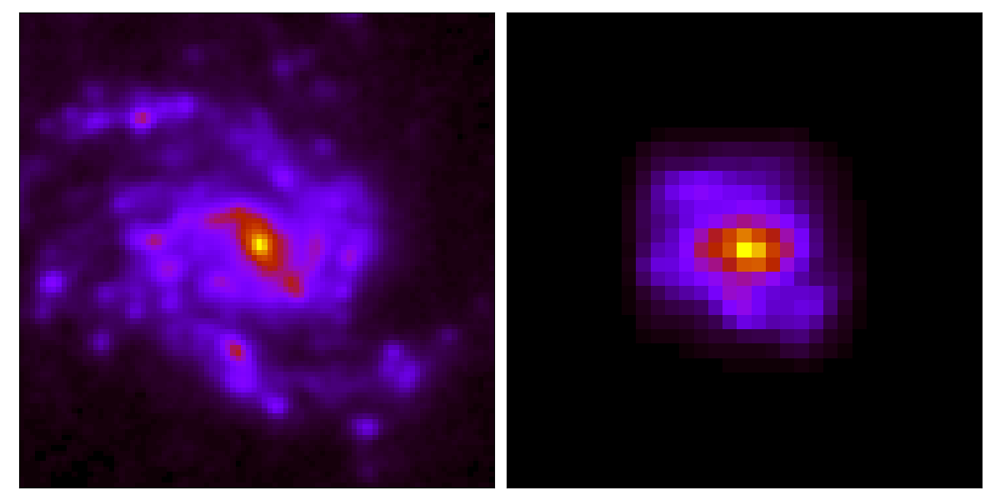
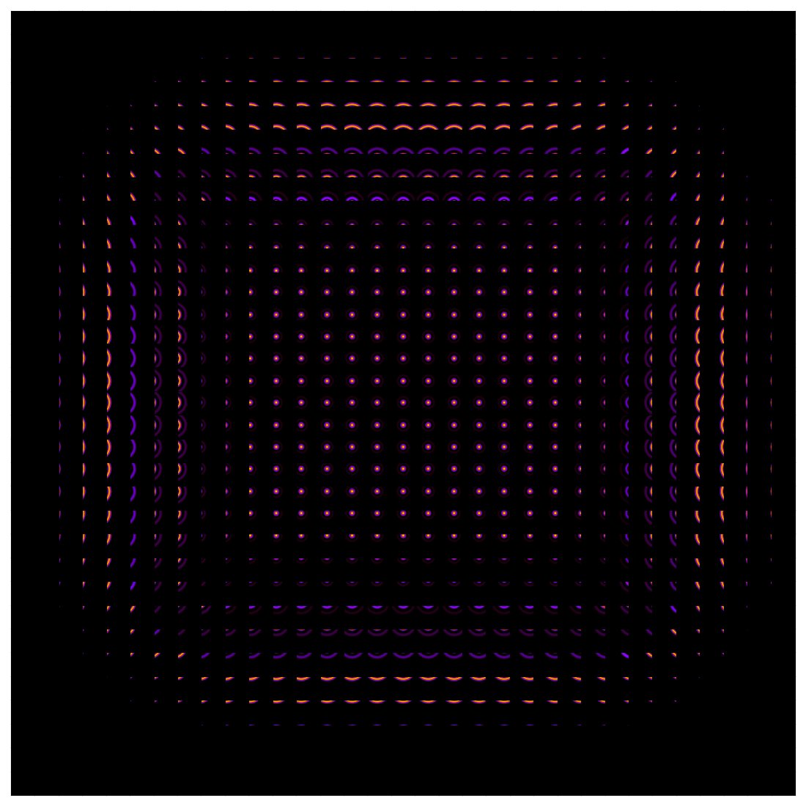
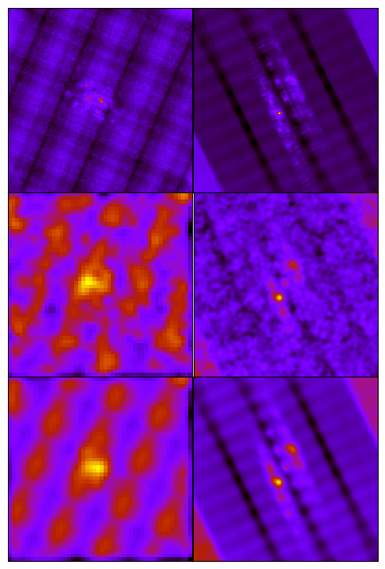

Idea
Let \(\boldsymbol{x} \in \mathbb{R}^{n}\) be a random vector with mean
\(\boldsymbol{\mu_{x}}\) and covariance matrix \(\boldsymbol{\Sigma_{x}}
\) and let \(f: \mathbb{R}^{n} \rightarrow \mathbb{R}^{m}\) be a
nonlinear function. Up to first-order approximation, \(\boldsymbol{y}=
f(\boldsymbol{x}) \approx f(\boldsymbol{\mu_{x}}) + J(\boldsymbol{x-
\mu_{x}})\), where \(J \in \mathbb{R}^{m \times n}\) is the Jacobian
matrix \(\partial f/\partial \boldsymbol{x}\) evaluated at
\(\boldsymbol{\mu_{x}}\). This approximation is reasonably
accepted\(^{*}\) and the random vector \(\boldsymbol{y} \in
\mathbb{R}^{m}\) has mean \(\boldsymbol{\mu_{y}} \approx
f(\boldsymbol{\mu_{x}})\) and covariance \(\Sigma_{y} \approx J
\Sigma_{x} J^{T}\).
For example, if \(\boldsymbol{x}\) is composed of two random vectors
\(\boldsymbol{a}\) and \(\boldsymbol{b}\) such that \(\boldsymbol{x}=(
\boldsymbol{a}, \boldsymbol{b})\), then
\(\Sigma_{y} = \begin{bmatrix}
J_{\boldsymbol{a}} & J_{\boldsymbol{b}} \end{bmatrix} \begin{bmatrix}
\sigma_{\boldsymbol{a}} & \sigma_{\boldsymbol{ab}} \\
\sigma_{\boldsymbol{ba}} & \sigma_{\boldsymbol{b}} \end{bmatrix}
\begin{bmatrix} J_{\boldsymbol{a}}^{T} \\ J_\boldsymbol{b}^{T}
\end{bmatrix} + O(N^2) \) (1)
where
\(J_{\boldsymbol{a}}=\partial\boldsymbol{y}/\partial \boldsymbol{a}\)
and \(J_{\boldsymbol{b}}=\partial\boldsymbol{y}/ \partial \boldsymbol{b}
\).
It can be seen that the uncertainty, characterized by the covariance
matrix, \( \Sigma_{\boldsymbol{x}} \), of the input data
\(\boldsymbol{x}\), is propagated to first degree by the Jacobian,
\(J\), through the operation, \( f \).
Example
I'll illustrate the idea with an application from multi-wavelength
astronomy of comparing images of the same physical object taken from
different instruments with different resolutions. One would have to
degrade the images to a minimum common resolution and then re-grid to a
common pixel size; by this, homogenize multiple images while preserving
the colors of the astronomical source. Resolution degradation is
achieved by convolving the image with a specially constructed
kernel\(^{**}\) which depends on the ratio of the initial and target
resolutions. Regridding is achieved by interpolating the image to a new
pixel grid defined by the target pixel size. Let \( \boldsymbol{x} \),
be a regularly gridded image of dimensions \( n\times m \) with
covariance matrix \( \Sigma_{\boldsymbol{x}} \). Then, \( y \), is the
result image of dimensions \( n'\times m' \) with \( n' \leq
n \) and \( m' \leq m \), where \(\boldsymbol{y} = h(
\boldsymbol{x}) = ( g \circ f)(\boldsymbol{x}) \), where \(f\) and \(g\)
the degrading and re-gridding operation respectively, and \( \Sigma_{y}
\) the propagated uncertainty of \(\boldsymbol{y}\).
|

Top
left: the original \(180\times 180\) image,
\(\boldsymbol{x}\), of NGC4254 as
seen by the instrument PACS on-board of the Herschel
space telescope at a wavelength of 70 \(\mu\)m with a
pixel size of 3 arcseconds and a resolution of 9
arcseconds. Top right: the result, \(\boldsymbol{y}\)
of the operation, \(h(\boldsymbol{x})\), degrading and
re-gridding to the resolution of the SPIRE instrument
on-board of the Herschel space telescope at a wavelength
of 250 \(\mu \)m with a pixel size of 8 arcseconds and
resolution 18 arcseconds resulting in a \( 60 \times
60\) image. Bottom left: the input uncertainty map
\(\Sigma_{\boldsymbol{x}}\). Bottom right: the propagated
uncertainty map, \(\Sigma_{\boldsymbol{y}}\), after
degrading and regridding.
|
Implementation
Assuming the input covariance matrix, \(\Sigma_{\boldsymbol{x}}\), to
have zero non-diagonal elements, then every pixel \((i,j)\) of the
initial uncertainty map is equal to the total variance, \(\sigma_{i,i}\)
of the input pixel \(\boldsymbol{x_{i,j}}\). This assumes no
correlation between uncertainties in different pixels.
Resolution degradation is done by convolving the image with a specific
kernel based on the ratio of initial and target resolutions. The
convolution, \(\boldsymbol{y}=\boldsymbol{x}\star K\), can be written as
\(\boldsymbol{y}[i,j] = \sum_{n,m}K[n,m]\times x[i-n,j-m]\). The
Jacobian is an array with each row corresponding to an output pixel
\(y[i,j]\), equal to the partial derivative of \(y[i,j]\) with respect
to \(x[k,l]\) is simply \(K[i-k, j-l]\). This shows that the derivative
at each pixel is the kernel itself but shifted depending on the position
of the pixel with respect to the center of the kernel. Following
equation (1), and assuming independent initial uncertainties, the
propagated uncertainty \(\sigma_{y}\) at \((i,j)\) is
\(\sigma_{y}^{2}[i,j] = \sum_{n,m}K[n,m]^{2}\times \sigma_{x}^{2}[i-m,
j-n]\), which is nothing but convolving the square of the initial
uncertainties with the square of the kernel,
\(\sigma_{y}^{2}=\sigma_{x}^{2}\star K{^2}\). Klein (2021)*** offers a
more general method for uncertainty propgation in convolution while
taking into account cross-correlations between pixels.
|

Visualization of the Jacobian,
\(J_{h}(\boldsymbol{x})\) for a convolution. Every element,
\(J_{i'j'}\), shows the derivative of \(
y_{i'j'}\), with respect to \(\boldsymbol{x}\).
Therefore showing the dependence of every pixel of
\(\boldsymbol{y}\) on \(\boldsymbol{x}\).
|
Pixel regridding derivatives... [TBA]
Results
A more applicable method, is to estimate the propagated uncertainty by
repeating the same process and by adding a random noise to each pixel
from a Gaussian distribution with a standard deviation equal to the
uncertainty associated with each pixel. With enough repetition, one can
estimate the propagated uncertainty of each output pixel by the
standard deviation of its values over all iterations. This method,
known as bootstrapping or Monte-Carlo, can be shown to be equivalent to
equation \((1)\), and therefore converges after enough iterations to
the
differr method.
|

Input uncertainty map, MC 100 iterations, MC 1000
iterations, and differr method for NGC4254 PACS1->SPIRE3
in the top row and for NGC3627 MIPS1->WISE4 in the
bottom row.
|
\(^{*}\) If \(f\) is approximately affine in
the region about the mean of the distribution
\(^{**}\) Aniano, G., Draine, B. T., Gordon, K. D., and Sandstrom, K.,
“Common-Resolution Convolution Kernels for Space- and Ground-Based
Telescopes”, Publications of the Astronomical Society of the
Pacific, vol. 123, no. 908, p. 1218, 2011. doi:10.1086/662219.
\(^{***}\) Randolf Klein 2021 Res. Notes AAS 5 39